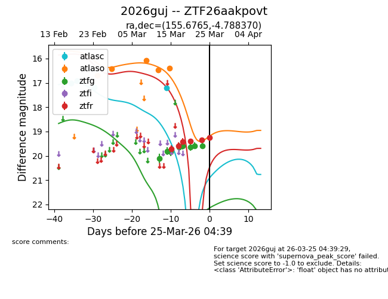
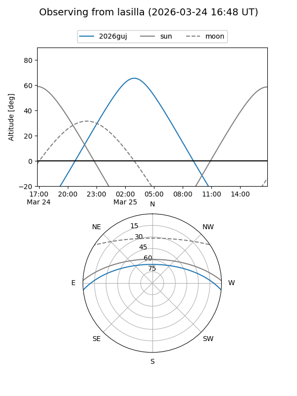
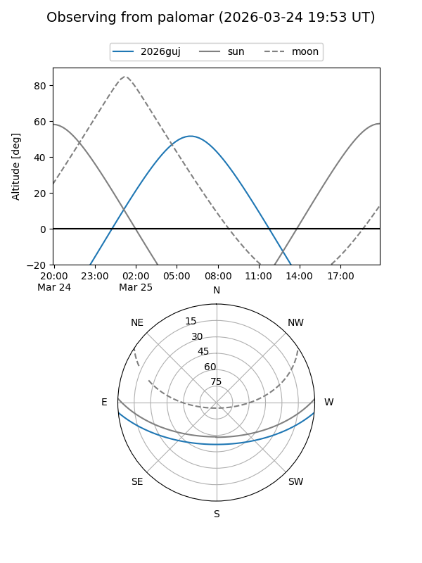
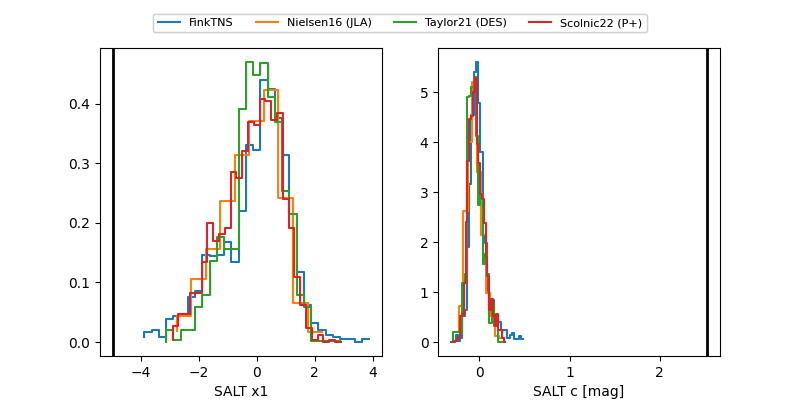

2026guj
Target 2026guj at 2026-03-25 04:42
Aliases and brokers:
FINK: link
Lasair: link
ALeRCE: link
TNS: link
YSE: link
alt names
ZTF26aakpovt (ztf,fink_ztf)
2026guj (tns,yse)
Coordinates:
equatorial (ra, dec) = 155.6765,-4.78837
equatorial (HMS+DMS) = 10:22:42.36,-04:47:18.13
galactic (l, b) = (248.8539,+41.95323)
Flags:
Photometry:
last atlasc=17.21, atlaso=16.39, ztfg=19.59, ztfr=19.26
4 atlasc, 5 atlaso, 8 ztfg, 6 ztfr detections
Lightcurve

Visibility


Additional plots
